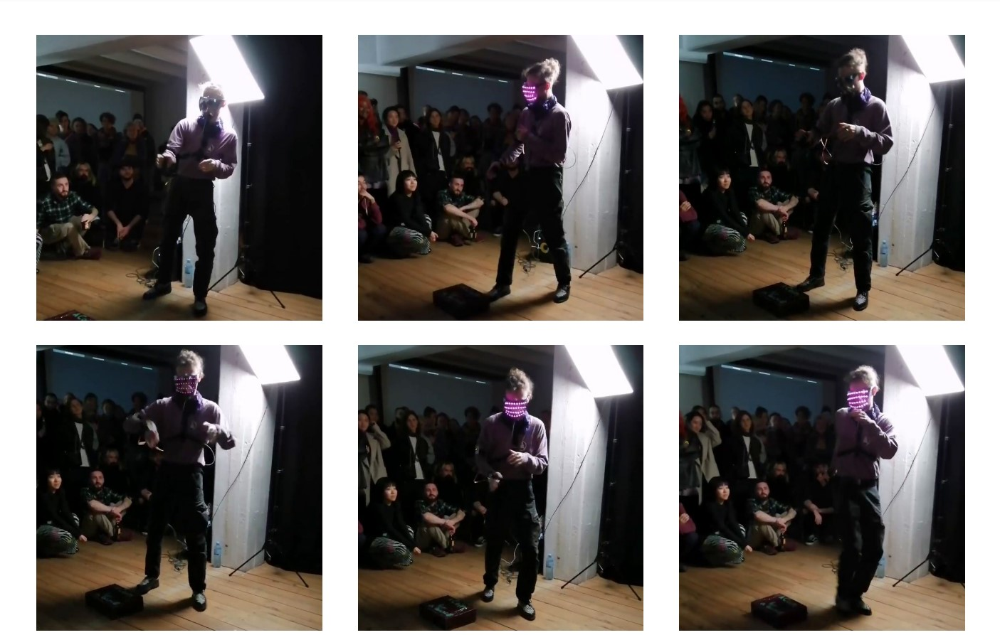
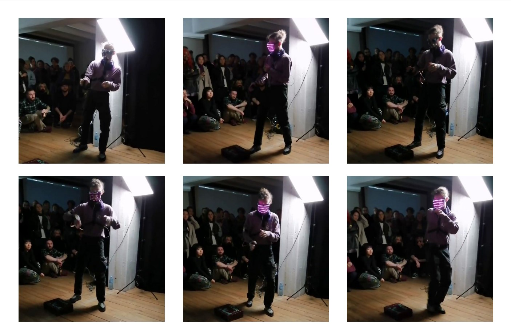

"Saf(v)e Space" is an interactive head mask that explores themes of safety and vulnerability in the digital age. Through its use of micro-electronics and interactive elements, the project invites the audience to consider the ways in which technology both protects and exposes us.
project consists of wearable piece and performance. The light under the mask reacts to a sensor which calculates the distance from the viewer to the dancer, In a sense, the performance creates an invisible and conceptual boundary around the space.
performance: Feodor Rousse